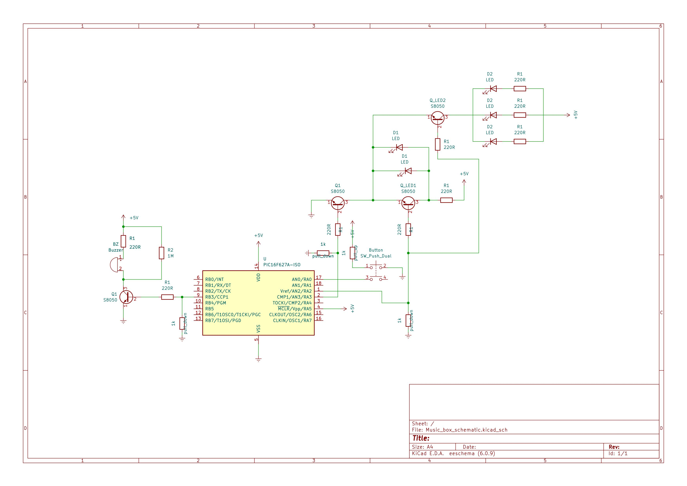

Single-Tone Music Card
Objective: This project is the completed with the intent of introducing myself to microcontrollers. I have used PIC16F627A from microchip for this purpose as it has all the basic features I would need.
The end result would be a music player that produces at single tones with correspondingly flashing LEDs.

Preliminaries
I began by familiarizing myself with PIC16F627A by going through its documentation . I mainly focused on what the microcontroller is capable of and eventually settled on PWM to be the main tool. The project has not been ideated at this point. I decided that it would be easier to determine what tool I'd like to use beforehand as the main objective is simply to learn about microcontrollers.
Pulse Width Modulation (PWM) is a technique that generates signal with variable with pulses. In other words, it is essentially a digital signal that turns on & off at a specifed interval to emulate that of analog. With a use of a transistor, this technique can be used to modify a DC voltage.
Active Piezoelectric Buzzer produces sound by using piezoelectric materials that deforms when alternating voltage is applied across them. As the material vibrates rapidly, a sound is produced. Active peizo buzzer has a build-in oscilitor, so it is able to receive DC voltage.
Prototype
Now that I can recognize what pins of the microcontroller I can use, a rough schematic can be sketched out.
Flashing LEDS: Three transistors are used. One will be used as a switch to enable/disable the flashing LEDs function as we would only like them to be flashing while the music is playing. While no sound is being produced, the LEDs will be entirely turned off. The other two are used to 'flash' the LEDs alternately alongside each shift in the produced tone.
Piezoelectric Buzzer: The buzzer is connected to a transistor that is controlled by the generated PWM signal from the microcontroller. The pitch of produced music notes corresponds to the variable voltage across the buzzer. Therefore, the pitch can be shifted accordingly by modifying the duty cycle of the PWM. Each song (a sequence of frequencies with varying time interval) will have to be incorporated within the microcontroller.
Code for the microcontroller can be found in the sources.
Demo
As you can see, the device is quite janky. The music is quite flat and flashing of the LEDs is nowhere near distinct. It may be due to a variety of factors such as cheap electronics, loose breadboard, and the potential interference caused by bunching of the wires. With that, I can turn to PCBs for a greater reliability.